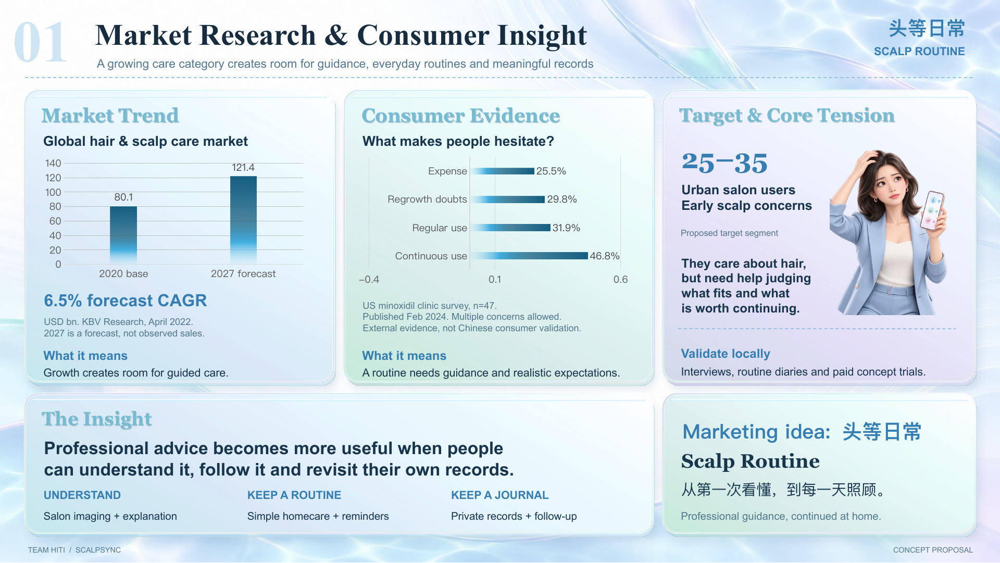
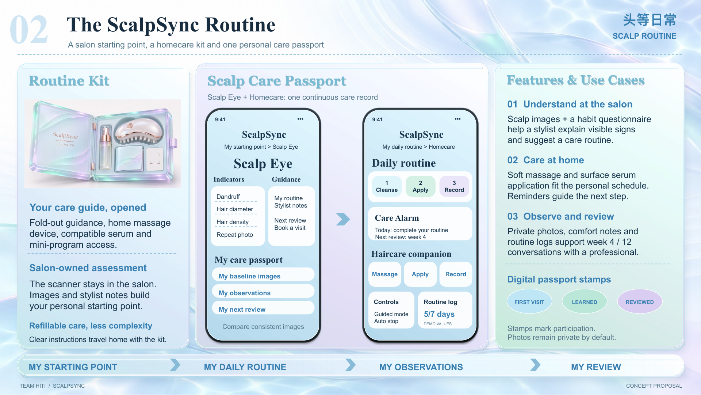

头等日常Care in continuity.
让专业建议，延续到日常护理。
产品概念 / 服务体验
continued.

ScalpSync
My daily routine
Daily routine
Cleanse2
Apply3
Record
让护理成为今天的小习惯。
Haircare companion
你的护理日常，从今天开始。
Scalp Eye
查看沙龙观察记录
理解适合自己的护理步骤
My care passport
记录专业建议与护理计划。
你的护理日常，从今天开始。
阶段复访，回顾感受与调整。
CONTINUES
一次专业建议，
如何变成日常习惯？
围绕头皮与美发护理，参与产品概念及营销方案思考。现有 ScalpSync 方案进一步探索沙龙指导、居家护理、个人记录与复访的连接。
核心产出
护理套装概念、沙龙与居家服务路径、护理记录及渠道试点思考。
护理的问题，
也可能在连续性。
消费者需要理解自己的护理需求，找到可执行的方法，并知道如何回顾和调整。
将沙龙的专业指导延伸到居家护理，通过个人记录与阶段复访，帮助用户理解需求、养成习惯并持续调整。
让一次服务，
拥有后续章节。
专业渠道承担的任务包括解释、指导和关系延续，帮助用户持续护理。
ScalpSync ／方案手记

01
下一页，继续让想法发生。
点击下页向上翻开 · 点击右下角放大阅读
把护理，
装进一个可延续的系统。
头等日常观察计划。

ScalpSync
My daily routine
Daily routine
Cleanse2
Apply3
Record
让护理成为今天的小习惯。
Haircare companion
你的护理日常，从今天开始。
Scalp Eye
查看沙龙观察记录
理解适合自己的护理步骤
My care passport
记录专业建议与护理计划。
你的护理日常，从今天开始。
阶段复访，回顾感受与调整。
头等日常观察计划
#头等日常观察计划
My Scalp Routine Moment
Creators make care part of daily life
- WHY START?
- A personal reason to pay attention
- WHAT DID I LEARN?
- An insight from the salon visit
- WHAT HELPS ME CONTINUE?
- A routine that fits my day
Xiaohongshu: search and lived experience Douyin: short demonstrations and education
Scalp Observation Station
- LOOKView images
- ASKGet guidance
- TAKE HOMECare + passport
Passport & Service Rewards
- FIRST ASSESSMENT
- Unlock the personal care passport
- PHASE PARTICIPATION
- Access a professional consultation
- SCHEDULED REVIEW
- Receive care or refill benefits
WeChat: appointment, journal and review Private scalp images. Optional public stories.
The Observation Plan
- DAY 0Salon baseline · Open the passport
- DAYS 1–14Build a habit · Learn, schedule and record
- WEEK 4Review routine · Discuss comfort and use
- WEEK 12Reflect · Review notes and next steps
Offer & Partner Model
Assessment / 12-week bundle / ongoing care
Salon lease + training. Price tests include service time, consumables and acquisition cost.
Pilot & Measurement
2 cities, 5–10 salons proposed
Booking, show rate, conversion, records, review, refills and margin
- Day 0
沙龙体验
建立护理档案，理解专业建议
- Day 1–14
居家护理
学习护理步骤，安排与记录日常
- Week 4
阶段复访
讨论使用感受，调整护理方式
- Week 12
回顾与计划
回顾记录，安排下一阶段护理
好概念，
也要回答运营问题。
可从小规模沙龙试点观察预约、到场、记录、复访和补充购买，并同时评估培训、耗材、服务时长和合作经济性。
我关注的不只是产品。
一套护理工具的价值，也取决于消费者能否理解并持续使用。产品、服务与沟通需要共同构成完整体验。